High Desert Development
Underground Utility Contractor
Wet and dry utilities, sewer and septic, deep wells, trenching and site preparation across the Antelope Valley and the High Desert. The owner is on the job himself.
Project gallery
Underground utility work in the High Desert
High Desert Development is an underground utility contractor based in California City and serving projects across the High Desert. Our capabilities include wet and dry utilities, sewer connections, septic systems, plumbing connections, trenching, drilling, excavation, grading, backflow work, and related site preparation.
This gallery documents utility projects from open trench and pipe installation through septic tanks, ventilation, final connections, heavy-equipment excavation, and finished grading.
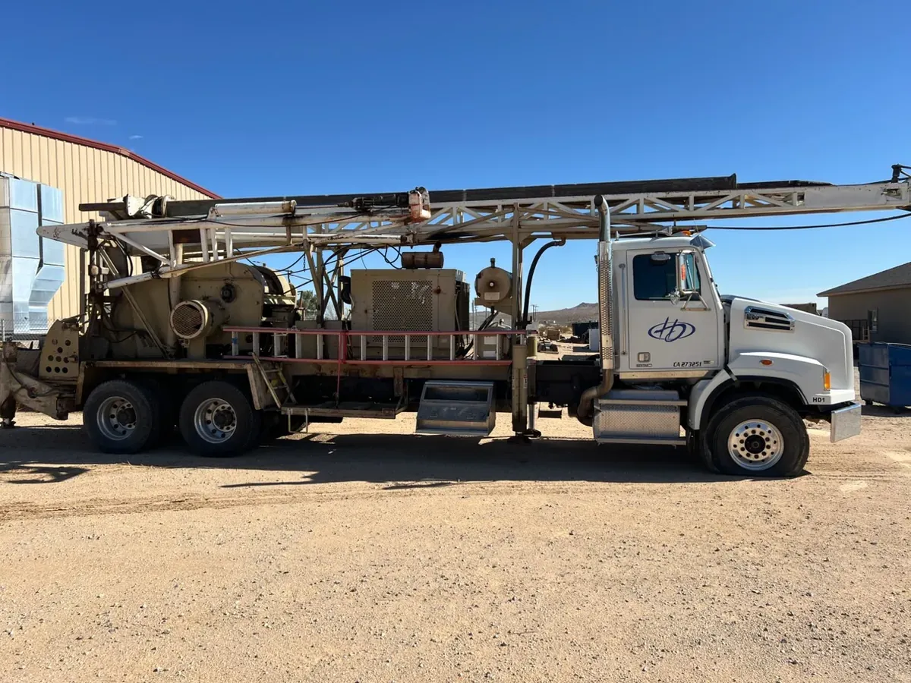
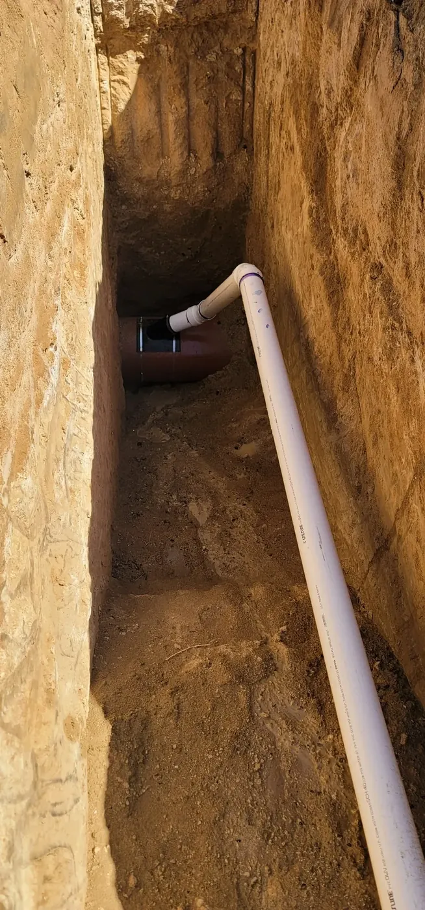
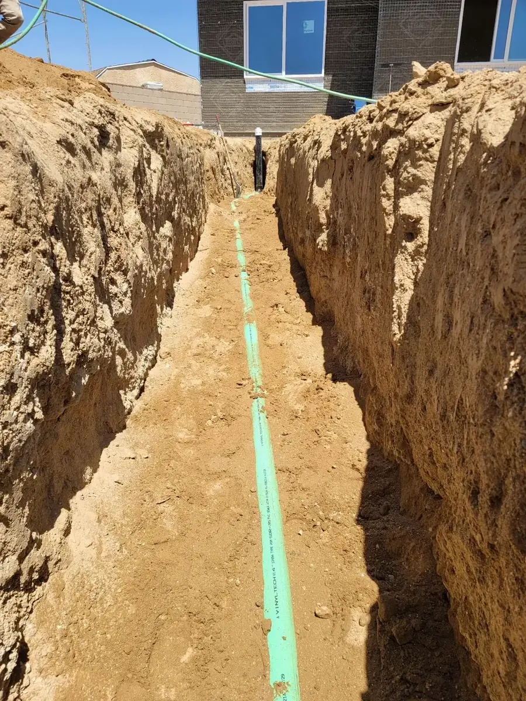
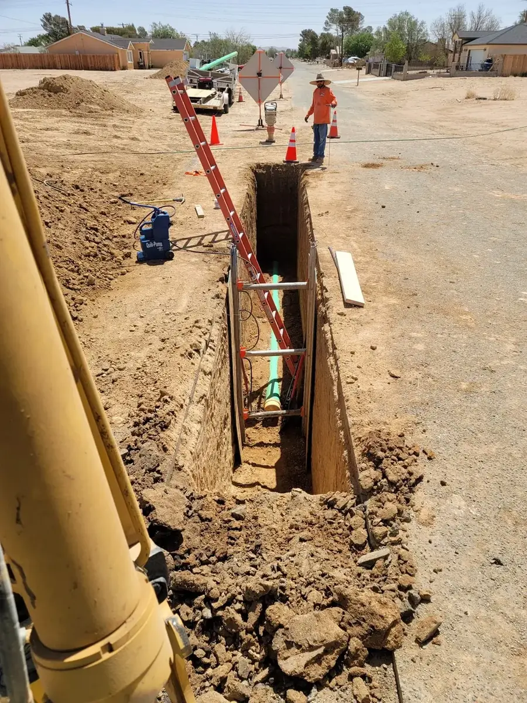
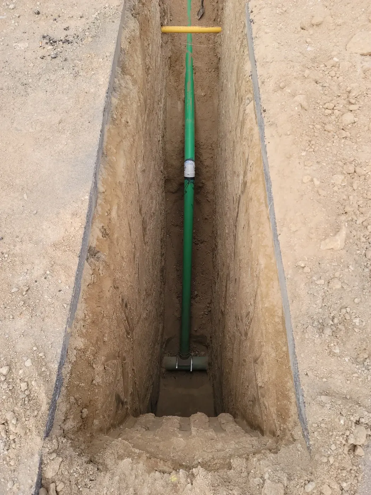

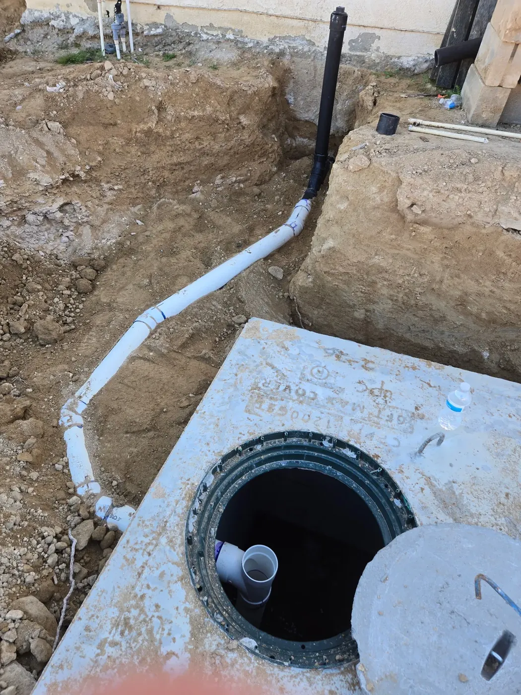
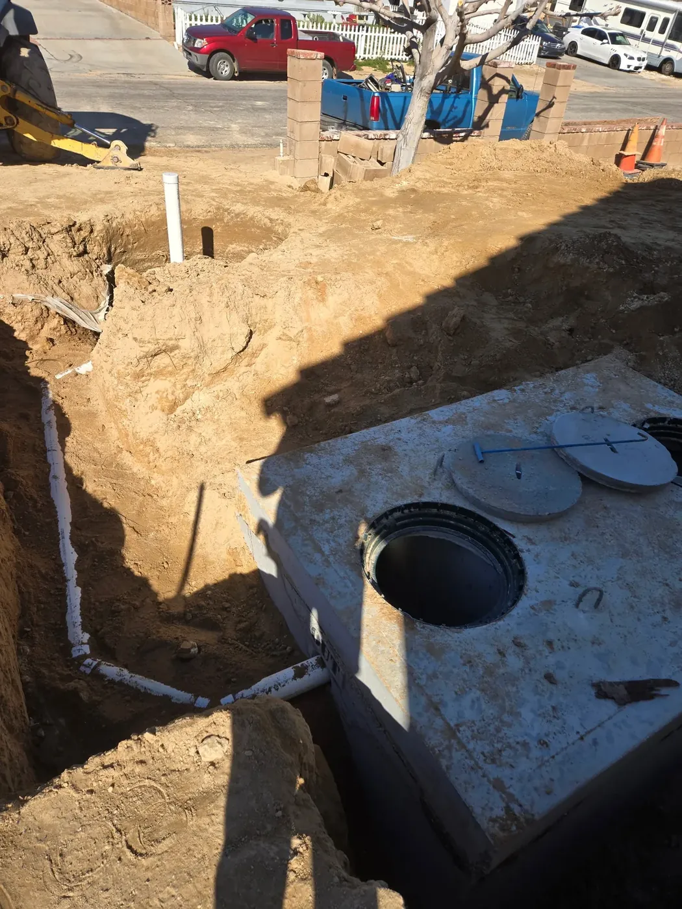
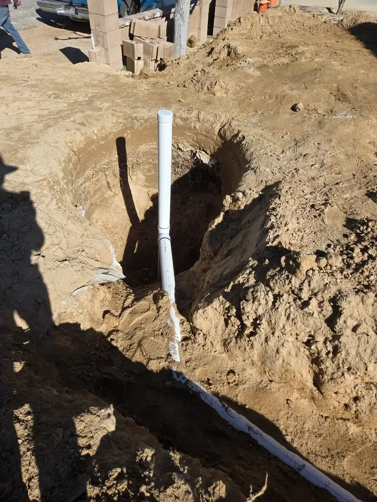
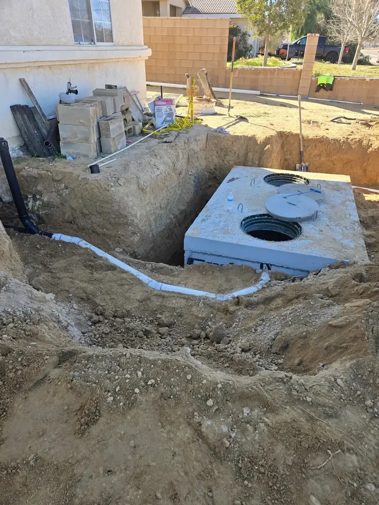
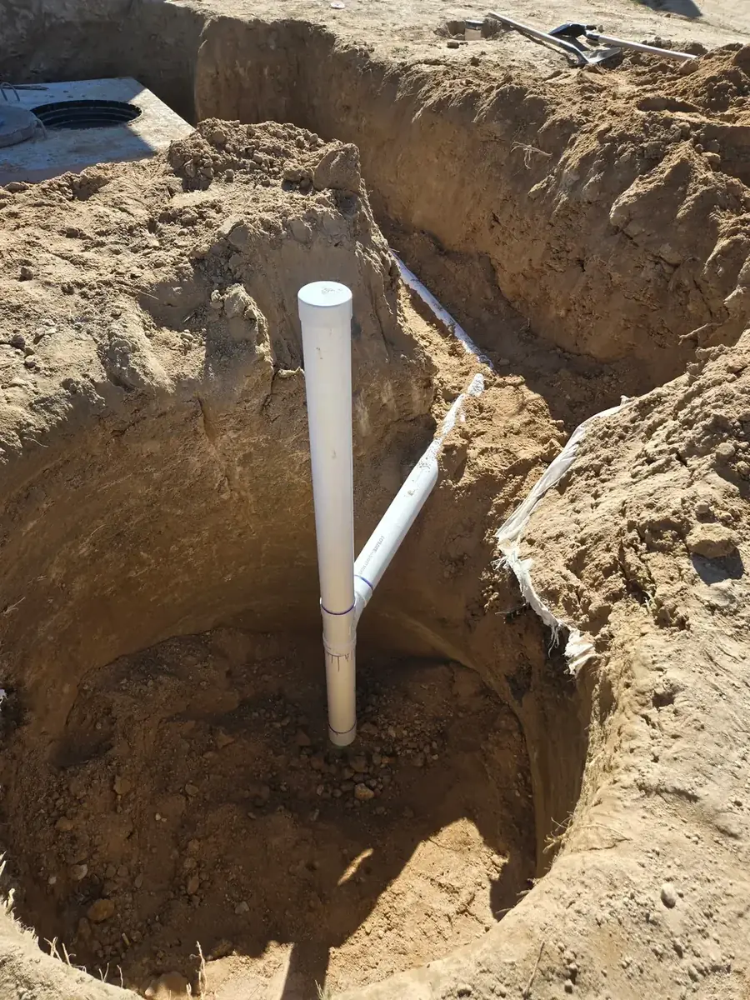
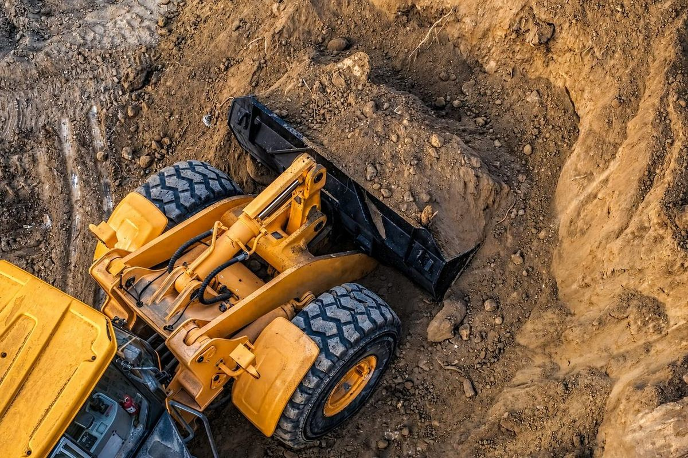
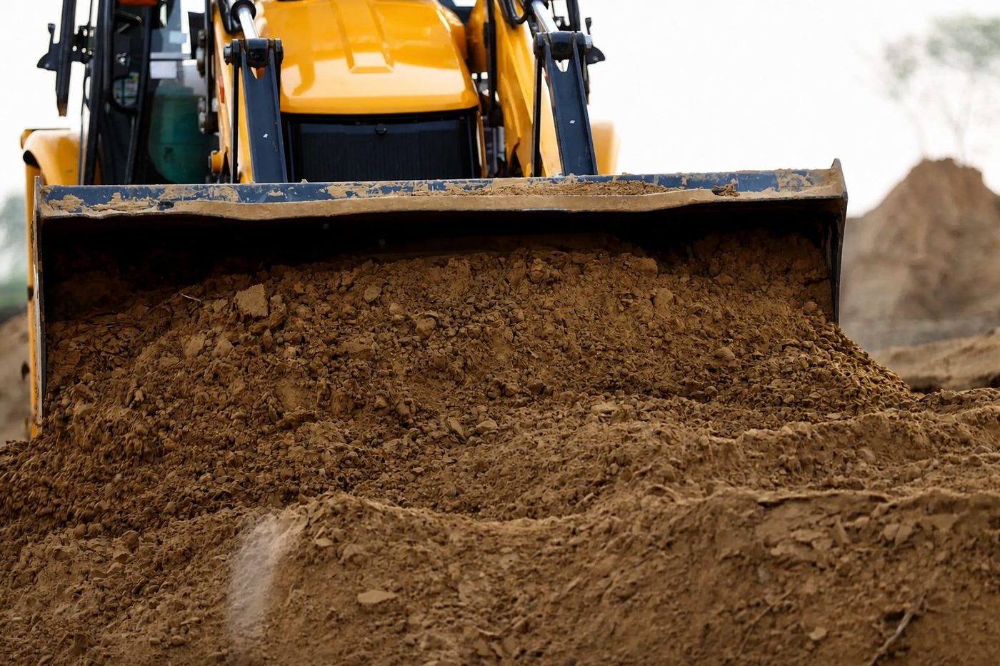
Printed sheets
The underground utilities sheet
The sheet that goes out with bids and gets left behind on job sites. It lists the wet and dry utilities, fire mains, hydrants, backflow devices and sewer connections we install, and the excavation and grading that goes with them.
{kind=link}
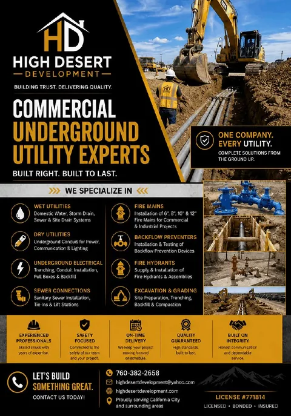
Start with the parcel
Find out what it takes to service your lot
Give us the parcel number and we will walk you through what water, power and septic actually involve out there.